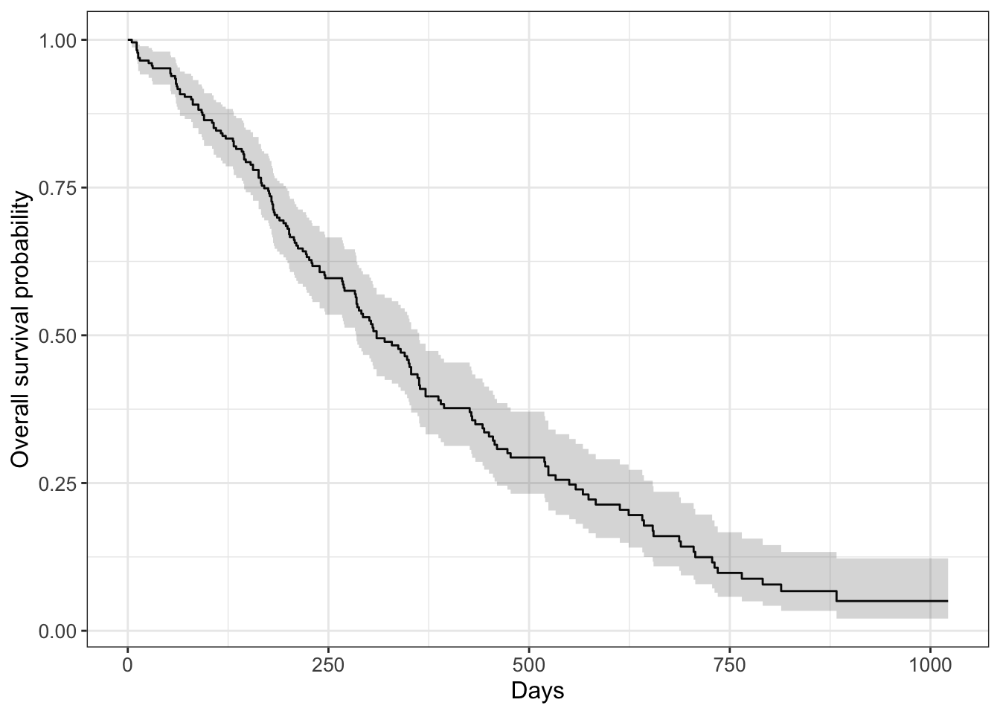

Time-to-event modeling, also known as survival analysis, is effective at adding a temporal element to predictive modeling. Whereas other binary output models are structured to predict the likelihood of a certain event happening, time-to-event modeling predicts the likelihood of an event happening at each passing unit of time. Survival modeling is also equipped to handle the issue of censored data. Many datasets where survival modeling would be effective only have two possible outcomes: the event in question eventually happens, or the observation is eventually cut off (censored) and the final outcome is unknown. For censored outcomes, the model will incorporate the information that is available to it (the length of time wherein an event did not occur) when developing its probability curve.
When using time-to-event modeling in R, it is most common to use the survival package. The package includes an example dataset, lung, which documents survival data from over 200 advanced lung cancer patients. Let’s create a survival model based on lung to estimate a patient’s likelihood of survival at each passing unit of time.
By using the command ?lung in R, we can learn the following information about our dataset:
Patient outcome is denoted as status, with 1 = censored and 2 = dead.
time denotes the length of time in days that the patient survived before dying or being censored.
ph.ecog denotes the patient’s ECOG performance score, with 0 being the best (asymptomatic), and 4 being the worst (bed-bound).
ph.karno and pat.karno denote the physician and patient’s subjective performance scores for the patient’s status respectively on a scale of 1-100.
meal.cal denotes the average number of calories consumed per meal during treatment and wt.loss denotes the patient’s weight loss in pounds in the last six months.
We will build our model around status and time, although we can examine the impact of the other variables later.
library(survival)library(dplyr)dataset <- lung |>mutate(# lung uses 1 and 2 for outcomes, but we want 0 and 1 for modelingstatus =recode(status, '1'=0, `2`=1),# Recode sex values for easier interpretationsex =recode(sex, '1'='M', `2`='F') )# Surv() method creates a survival object# survfit() fits the object to the datasurvival_model <-survfit(Surv(time, status) ~1, data = dataset)str(survival_model)
List of 17
$ n : int 228
$ time : num [1:186] 5 11 12 13 15 26 30 31 53 54 ...
$ n.risk : num [1:186] 228 227 224 223 221 220 219 218 217 215 ...
$ n.event : num [1:186] 1 3 1 2 1 1 1 1 2 1 ...
$ n.censor : num [1:186] 0 0 0 0 0 0 0 0 0 0 ...
$ surv : num [1:186] 0.996 0.982 0.978 0.969 0.965 ...
$ std.err : num [1:186] 0.0044 0.00885 0.00992 0.01179 0.01263 ...
$ cumhaz : num [1:186] 0.00439 0.0176 0.02207 0.03103 0.03556 ...
$ std.chaz : num [1:186] 0.00439 0.0088 0.00987 0.01173 0.01257 ...
$ type : chr "right"
$ logse : logi TRUE
$ conf.int : num 0.95
$ conf.type: chr "log"
$ lower : num [1:186] 0.987 0.966 0.959 0.947 0.941 ...
$ upper : num [1:186] 1 1 0.997 0.992 0.989 ...
$ t0 : num 0
$ call : language survfit(formula = Surv(time, status) ~ 1, data = dataset)
- attr(*, "class")= chr "survfit"
We can probably infer some conclusions from these numbers, but let’s visualize them and get a better understanding of our model’s curve.
library(ggsurvfit)# Different fitting method used for ease of plottingsurvfit2(Surv(time, status) ~1, data = dataset) |># Distinct plotting function for survival modelsggsurvfit() +labs(x ="Days",y ="Overall survival probability" ) +# Helper function to see CIadd_confidence_interval()

Let’s ask another question: How does our model predict the likelihood of survival at biannual benchmarks? To answer this, we can use the tbl_survfit() function from the gtsummarypackage:
library(gtsummary)survival_model |>tbl_survfit(# Calculate probability every 6 months for first 2 yearstimes =c(182.5, 365, 547.5, 720),label_header ="**{time} Days** (95% CI)" )
Characteristic
182.5 Days (95% CI)
365 Days (95% CI)
547.5 Days (95% CI)
720 Days (95% CI)
Overall
71% (65%, 77%)
41% (34%, 49%)
26% (20%, 33%)
12% (7.9%, 20%)
Lastly, let’s analyze how survival likelihoods vary across qualitative or quantitative variables. The survdiff() function demonstrates how survival performance differs along qualitative variable lines. For example, the following excerpt compares how men and women fare compared to predicted survival rates:
# Create new Surv object with sex as dividing linesurvdiff(Surv(time, status) ~ sex, data = dataset)
Call:
survdiff(formula = Surv(time, status) ~ sex, data = dataset)
N Observed Expected (O-E)^2/E (O-E)^2/V
sex=F 90 53 73.4 5.68 10.3
sex=M 138 112 91.6 4.55 10.3
Chisq= 10.3 on 1 degrees of freedom, p= 0.001
This output demonstrates that, in a model that doesn’t account for sex by default, women have fewer observed deaths than projected, and the opposite is true for men. Considering that p = 0.001, it appears statistically significant that female patients are at a survival advantage when dealing with lung cancer compared to men.
If we want to measure the impact of a quantitative value on survival, the best course of action is to create a Cox regression model. The coxph function, which is included in the survival package, allows the user to create a Cox model based on an existing Surv object. The following example examines the effects of age on survival rates relative to predictions:
# Create new Surv object with age as dividing linefit_cox <-coxph(Surv(time, status) ~ age, data = dataset)summary(fit_cox)
Call:
coxph(formula = Surv(time, status) ~ age, data = dataset)
n= 228, number of events= 165
coef exp(coef) se(coef) z Pr(>|z|)
age 0.018720 1.018897 0.009199 2.035 0.0419 *
---
Signif. codes: 0 '***' 0.001 '**' 0.01 '*' 0.05 '.' 0.1 ' ' 1
exp(coef) exp(-coef) lower .95 upper .95
age 1.019 0.9815 1.001 1.037
Concordance= 0.55 (se = 0.025 )
Likelihood ratio test= 4.24 on 1 df, p=0.04
Wald test = 4.14 on 1 df, p=0.04
Score (logrank) test = 4.15 on 1 df, p=0.04
As this model’s value for exp(coef), which represents the odds ratio of patients at n years relative to n-1 years (all other factors held constant) is 1.019, each additional year of age increases a patient’s risk of death by 1.9%. Additionally, a 95% confidence interval of (1.001, 1.037) demonstrates a 95% confidence that the true hazard of an increase in age results in an increase in risk. Finally, a p value of 0.04 shows that these findings are statistically significant.
In totality, the survival package is an excellent option for modeling any dataset that focuses on the progressing hazard of a key event.
k-Nearest Neighbors (k-NN) is a non-parametric method that utilizes supervised machine learning to classify data entries based on similarity to other entries. The class package in R, which contains a variety of machine learning functions, includes a method for building k-NN models, and will serve as the basis for our example implementation.
Let us imagine that we want to be able to classify flower species from the iris dataset from base principles. We can train a k-NN model with three defined classes and test its accuracy. This will require the application of a few distinct aspects of machine learning, such as:
Input Normalization - scaling numerical input values relative to the dataset’s observed maximum and minimum values for a given variable on a (0,1) or (-1, 1) scale.
Train-Test Dataset Splits - isolating a minority of entries in a dataset to exclude from training and use to test the accuracy of the final model.
Confusion Matrices - tables that highlight inaccurate classification predictions that machine learning models make.
With these concepts defined, we can begin to build our model. First, we will normalize the dataset’s numeric columns so they are machine learning ready.
As the table shows, the model only made one incorrect prediction, a versicolor flower that was predicted to be virginica. Testing performance may vary due to seeding variance other factors, but in this case the model performed quite well.
All in all, k-NN models are strong options for projects where you would like to predict classifications based on a wholistic data frame.